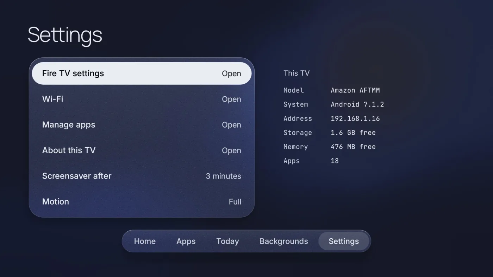
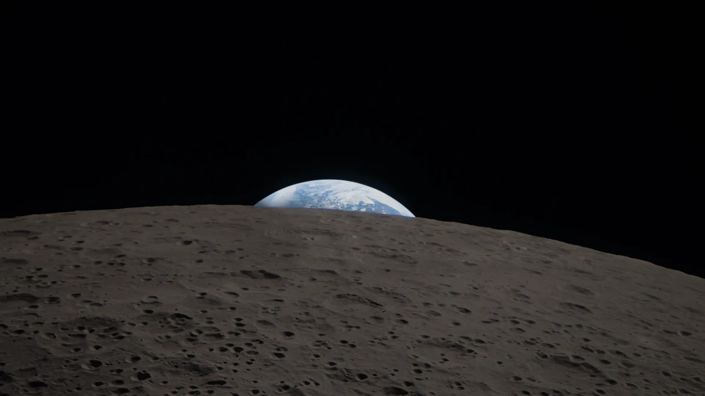

Weather, air quality and the moon
Live weather and air quality for your city, and the real moon at tonight's phase on its actual path.

Pane swaps Amazon's row of ads for your apps, the time and the sky outside, over living smoke behind frosted glass. No ads, no accounts, no tracking.
Free and MIT licensed. Runs smoothly on a 2018 Fire TV Stick.
Live weather and air quality for your city, and the real moon at tonight's phase on its actual path.
Six smoke fields that take on your app's colour, or four NASA photographs, all behind frosted glass.

New apps join by themselves. Press Menu on any app to pin it to Home or take it off.

Pane never hides the system: display, sound and remotes stay one press away.

Made from Pane running on a 2018 Fire TV Stick 4K. The smoke is Pane's own shader, drawn live on the TV.
Amazon doesn't let other apps replace the Fire TV home screen, so Pane needs a one-time setup from a computer on the same Wi-Fi.
On the TV: Settings → My Fire TV → Developer options → ADB debugging → On. No Developer options? Go to Settings → My Fire TV → About and press OK on your device name seven times.
Settings → My Fire TV → About → Network.
Use the command for your system, with your TV's address in place of 192.168.1.20.
A prompt appears: choose Always allow from this computer, then OK.
curl -fsSL https://raw.githubusercontent.com/Arya-A-Nair/pane-tv/main/install/pane-install.sh | bash -s -- 192.168.1.20iwr https://raw.githubusercontent.com/Arya-A-Nair/pane-tv/main/install/pane-install.ps1 -OutFile pane-install.ps1
powershell -ExecutionPolicy Bypass -File .\pane-install.ps1 192.168.1.20Amazon holds the Home button for a few seconds before Pane takes over; Pane shows a still screen instead of Amazon's ads while it waits. The installer downloads the latest signed release, checks its checksum, installs it and grants the two permissions Pane needs. Run it again to update.
Download pane.apk, install it (for example with the Downloader app or Send Files to TV), then press Home and choose Pane as your home app.
Run adb uninstall tv.pane and your TV goes straight back to its original home screen. Pane never changes system files.
For the Fire TV setup, a computer with adb. Tested on a Fire TV Stick 4K (2018); other Fire TV and Android TV devices should work but are unverified, so report how it goes.

Your approximate location comes from your public IP address (ip-api.com), and the weather and air quality for it come from Open-Meteo. Nothing else leaves the TV.
Read the code, build it yourself or report what's broken. Releases are built and signed by GitHub Actions.

A plain-Java Android app with no third-party libraries, small enough for a 2018 Fire TV Stick.
A fragment shader at 30 fps. Glass samples a pre-blurred copy of the room, because Fire OS has no blur.
Rendered from NASA's lunar map; phase, rise and set come from standard astronomical formulas.
A small watcher brings Pane forward when Amazon's home opens, with a permission granted once over ADB.